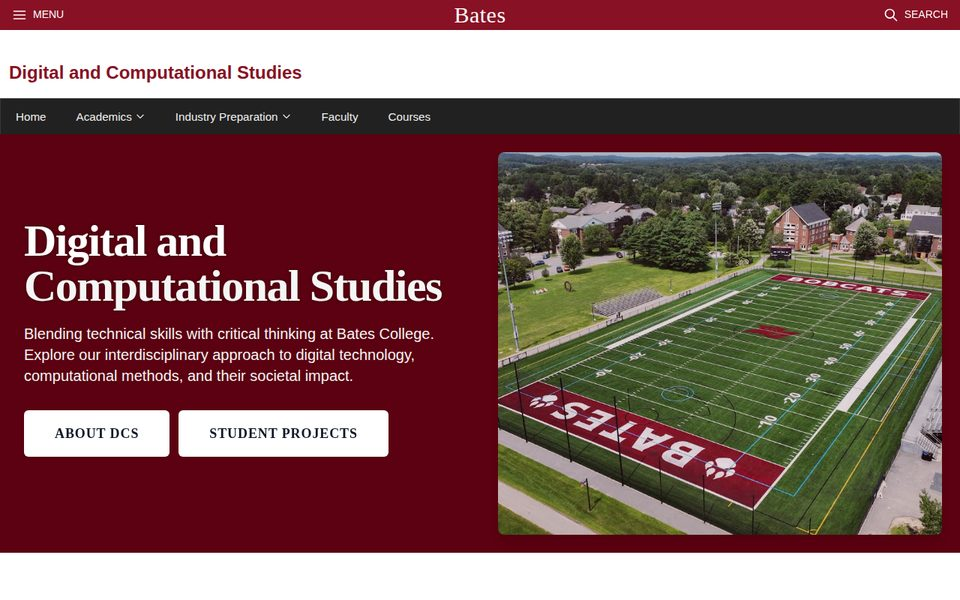
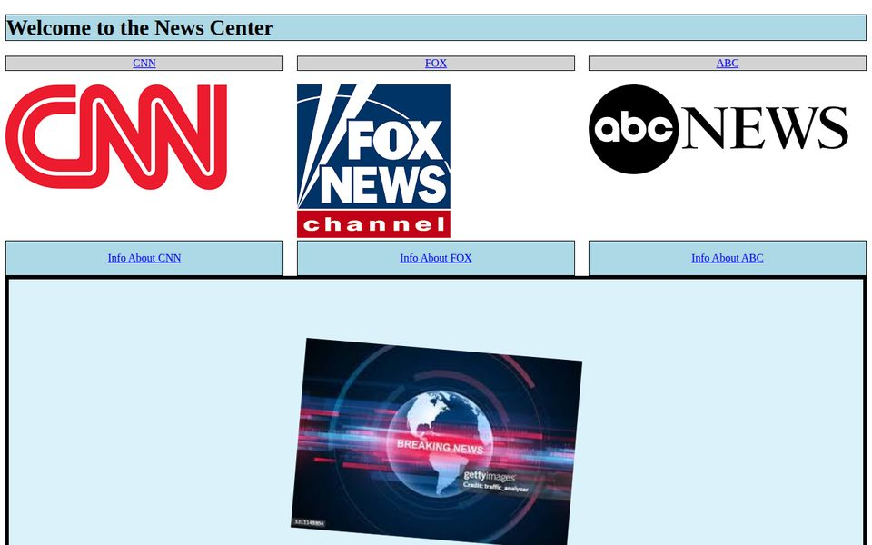
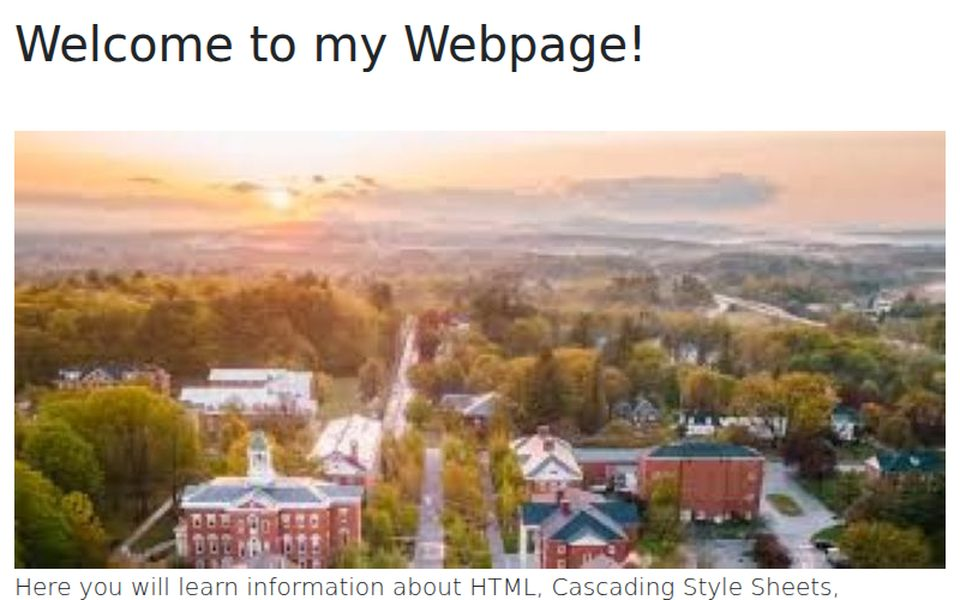
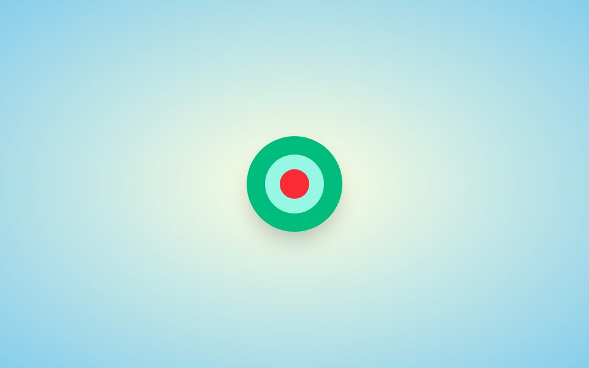

DCS325 Portfolio
Web Development
A semester of building for the web, from hand-written HTML and CSS to React apps with a real backend.

Featured
The projects I'm proudest of, with screenshots.
DCS Major Site
A redesign of the Bates Digital & Computational Studies major page. Every button and menu can be reached with the Tab key, and the layout follows Krug's usability ideas: clear headings, obvious buttons, simple navigation and minimal text.

News Center
A hand-built news hub with pages for CNN, Fox and ABC. Each page pulls the network's latest headlines from its RSS feed with JavaScript, so the stories update on their own.

Web Development Info Site
An informational site about HTML, CSS, JavaScript and GitHub, built from reusable React components (NavBar, LandingPageContent, PageBorder and InfoCard) with React-Bootstrap.

Tailwind Bullseye
A bullseye on a gradient background, styled entirely with Tailwind's built-in utility classes and no custom CSS.
All Projects
Everything else from the course, in the order I built it.
Course Elements
JavaScript
Five menu buttons, each with a click listener that animates an information box into view.
View code →SSH & SCP Guide
ssh scp tar
A step-by-step guide to creating SSH keys, logging in without a password, and deploying a website to Bates's Catapult server.
Read the guide →Bootstrap Components
Bootstrap React
A Bates-branded navbar and a carousel you can move through with the keyboard, built from Bootstrap components.
View code →ShadCN Dashboard
ShadCN/UI Tailwind
A dashboard with a collapsible sidebar, customized with new lucide-react icons and an added Binary section.
View code →DCS Project Showcase
Figma
A clickable prototype for showcasing DCS student projects, designed in Figma without writing any code.
Open prototype →Game Center
Cursor React
Chess and Tic-Tac-Toe against a computer opponent, built with Cursor and Claude 3.7 Sonnet using React, ShadCN and Tailwind 4.
View code →Firebase Sign-In
Firebase React
Sign up, log in, password reset and a protected dashboard, with Firebase Authentication storing accounts in the cloud.
View code →Notes
What I wrote about these projects along the way.
Though it is significantly more basic than anything in react, I think this is one of my more proud projects of the semester because it was entirely handmade.
This is one of the cooler websites in the portfolio, just because it actually has a backend
One great feature of figma, with great help from AI, is that you can take a figma and hand it off to Cursor, AI coding environment, to easily implement it's interpretation of the project you gave it.
I personally messed around with the way the left navigational bar worked, also known as a dropdown menu, and changed a few of the icons along with adding the Binary section.
Toolkit
Everything this course covered.